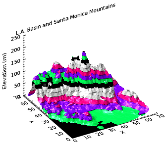

You can enhance contour graphics by displaying different levels of the contour and filling them with color. In this topic, we will use the CONTOUR function along with various keywords to demonstrate some of the capabilities of CONTOUR.
This first example uses random data to demonstrate how to define colors to use, fill the contours and then outline the levels you want to show. This example also illustrates how to smooth contour data.
The code shown below creates the graphic shown above. You can copy the entire block and paste it into the IDL command line to run it.
; Create a simple dataset:
data = RANDOMU(seed, 9, 9)
; Plot the unsmoothed data:
unsmooth = CONTOUR(data, TITLE='Unsmoothed', $
LAYOUT=[2,1,1], RGB_TABLE=13, /FILL, N_LEVELS=10)
; Draw the outline of the 10 levels
outline1 = CONTOUR(data, N_LEVELS=10, /OVERPLOT)
; Plot the smoothed data:
smooth = CONTOUR(MIN_CURVE_SURF(data), TITLE='Smoothed', $
/CURRENT, LAYOUT=[2,1,2], RGB_TABLE=13, $
/FILL, N_LEVELS=10)
; Draw the outline of the 10 levels
outline2 = CONTOUR(MIN_CURVE_SURF(data), $
N_LEVELS=10, /OVERPLOT)
The data in this example is a digital elevation model (DEM) data taken from the Santa Monica mountains in California.

The code shown below creates the graphic shown above. You can copy the entire block and paste it into the IDL command line to run it. The keywords used are explained in detail after the example code.
; Define the digital elevation model data to open
file = FILEPATH('elevbin.dat', SUBDIR=['examples', 'data'])
; Read the binary file and define the data dimensions
dem = READ_BINARY(file, DATA_DIMS=[64,64])
; Rotate the data for display purposes
dem = ROTATE(dem, 1)
; Define the minimum data elements
dem_min = MIN(dem, MAX=dem_max)
; Define the number of levels to display
nlevels = 15
; Define the levels to display
levels = FINDGEN(nlevels)/nlevels*(dem_max-dem_min) + dem_min
; Define the levels to show and the colors to use
levels = [-1, levels]
; Display the filled contour
c1 = CONTOUR(dem, $
C_VALUE=levels, RGB_TABLE=12, $
/FILL, PLANAR=0, $
XTITLE='X', YTITLE='Y', ZTITLE='Elevation (m)', $
TITLE='L.A. Basin and Santa Monica Mountains')
; Move the Z Axis to the back.
(c1['zaxis']).location = [0, (c1.yrange)[1], 0]
; Overplot the contour lines to show more detail
c2 = CONTOUR(dem, $
C_VALUE=levels, PLANAR=0, COLOR='black', $
/OVERPLOT)